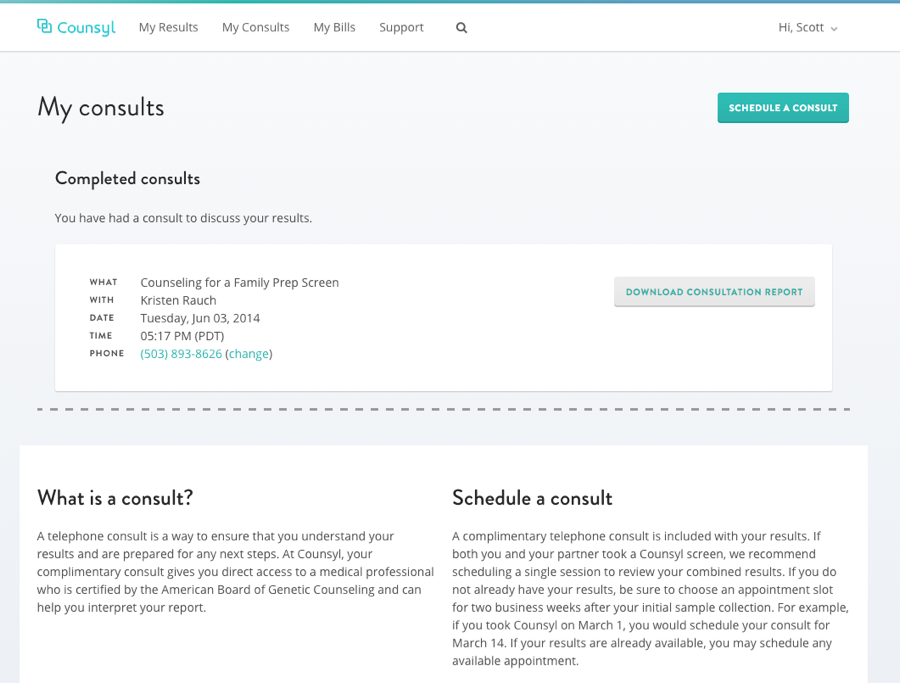
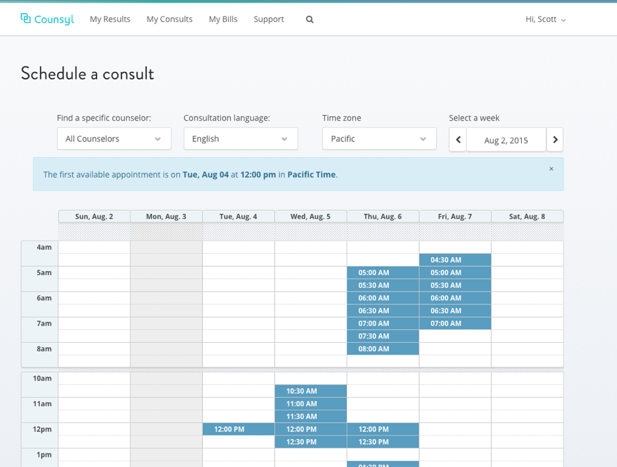
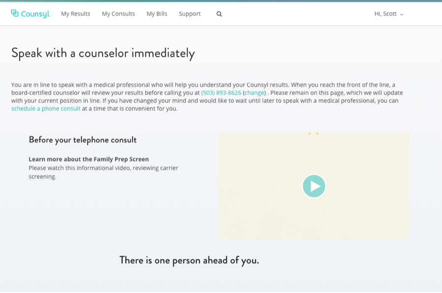
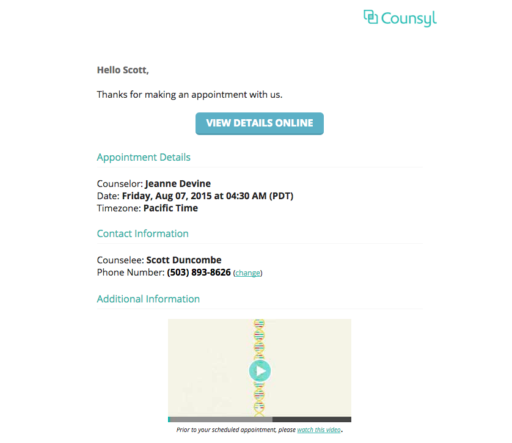

Nº 13 · Habitat II — Software & science
Counsyl
Redesigning the patient experience - with Counsyl.
- First observed
- 2014
- With
- 50+ engineers, SF
Counsyl is dedicated to providing patients vital information about their body, I joined a 50+ engineers team as part of the design team and worked to relaunch Counsyl.com with new logo, branding, and patient facing functionality.
I worked on team to build counseling application to deliver genetic screening results and connect patients to Genetic Counselors to ensure they understood their results. I helped rebuild the counseling portal to work on a mobile device and expand the application to allow for on-demand counseling appointments, allowing patients to receive their results and speak to a genetic counselor within minutes.
I also worked on a team to redesign Counsyl's PDF reports, converted the company's text emails to well designed html, and began implementing a web portal for patient test price transparency.
Most of Counsyl's application is built in Python with Django, with page's designed in Django Templates, SASS, and coffeescript with integration tests performed in selenium. The PDF reports were generated with Prince XML. Counsyl used Github Enterprise and a continuous integration system for testing and deployment.
Plates · from the field



